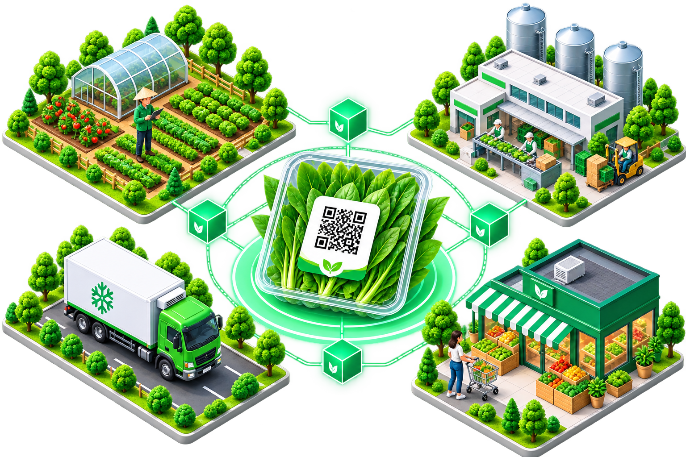
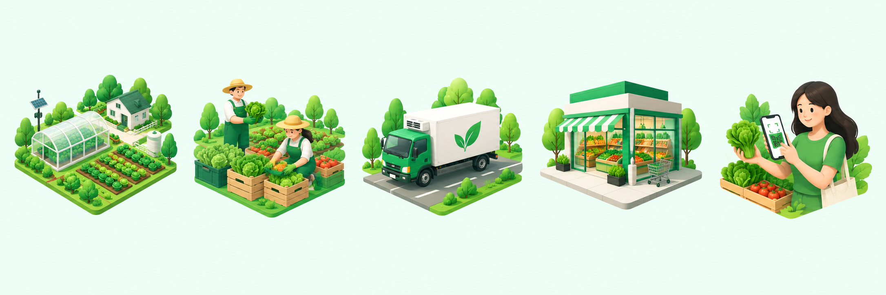
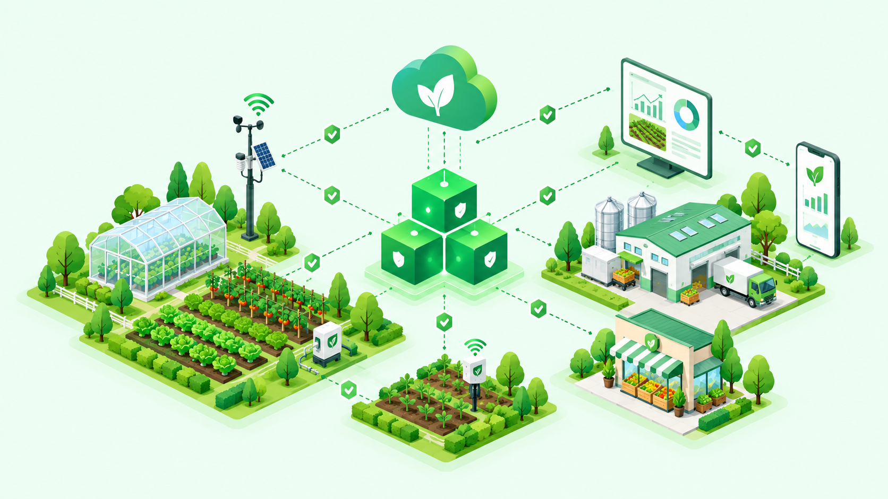

AgriTrace mang đến giải pháp truy xuất nguồn gốc nông sản ứng dụng công nghệ Blockchain và IoT. Chúng tôi kết nối niềm tin từ nông trại đến bàn ăn, đảm bảo chất lượng và an toàn thực phẩm.

100%
Dữ liệu minh bạch
24/7
Theo dõi thời gian thực
5 bước
Chuỗi cung ứng
ĐỐI TÁC ĐỒNG HÀNH
0
Vụ trồng
0
Lô sản phẩm
0
Chuyến vận chuyển
0
Sự kiện blockchain
Quản lý xuyên suốt mọi khâu từ lúc gieo hạt đến khi sản phẩm đến tay người tiêu dùng.
Ghi nhật ký canh tác điện tử, quản lý vùng trồng, vật tư nông nghiệp và thu hoạch.
Tìm hiểu thêmGiám sát hành trình, nhiệt độ kho lạnh và bàn giao sản phẩm một cách minh bạch.
Tìm hiểu thêmKiểm soát nguồn nhập, quản lý kho kệ và xuất hóa đơn truy xuất thông minh.
Tìm hiểu thêmTích hợp chứng chỉ VietGAP, GlobalGAP trực tiếp vào hồ sơ sản phẩm trên Blockchain.
Tìm hiểu thêmMọi sự kiện được ghi vĩnh viễn lên Blockchain — bất biến, không thể giả mạo, ai cũng có thể kiểm chứng.

Gieo trồng, chăm sóc theo chuẩn VietGAP. Nhật ký điện tử ghi lại mọi hoạt động canh tác.
Sản phẩm được đóng gói, in mã QR liên kết với hồ sơ lô hàng trên hệ thống.
IoT giám sát nhiệt độ, độ ẩm theo thời gian thực. Mọi hành trình được ghi lại GPS.
Siêu thị, cửa hàng nhận hàng và xác nhận. Trạng thái lô được cập nhật lên kệ bán.
Quét mã QR xem toàn bộ hành trình sản phẩm — ai trồng, ai vận chuyển, ai bán.
Blockchain đảm bảo — Dữ liệu bất biến
Mọi sự kiện trong quy trình đều được ghi vĩnh viễn lên blockchain. Không ai có thể chỉnh sửa hay xóa.
15,670+
Sự kiện blockchain
99.97%
Uptime hệ thống
<2s
Thời gian xác thực
AgriTrace kết hợp Blockchain, IoT, AI và Phân tích dữ liệu — tạo ra hệ sinh thái truy xuất nguồn gốc an toàn, tự động và minh bạch tuyệt đối.
Mọi sự kiện trong chuỗi cung ứng được ghi vĩnh viễn lên blockchain — bất biến, không thể giả mạo. Bất kỳ ai cũng có thể kiểm chứng độc lập.
Cảm biến nhiệt độ, độ ẩm, GPS tích hợp real-time. Dữ liệu tự động sync lên hệ thống.
AI phân tích hình ảnh cây trồng, cảnh báo sâu bệnh, dự báo năng suất chính xác.
Dashboard thống kê trực quan: theo dõi sản lượng, tỷ lệ xác thực, hiệu suất chuỗi cung ứng để ra quyết định tốt hơn.
↑ Sản lượng tháng này tăng 23%

Bất biến 100%
Blockchain verified
Real-time IoT
247 thiết bị online
95%
AI Accuracy
Muốn tìm hiểu sâu hơn về hệ sinh thái công nghệ?
Quét ngay
Biết rõ nguồn gốc
Trải nghiệm tính năng truy xuất nguồn gốc của AgriTrace. Nhập mã lô sản phẩm (VD: AT000123456) để xem toàn bộ thông tin minh bạch.
Công nghệ Blockchain đang mở ra một kỷ nguyên mới cho ngành nông nghiệp, giúp gia tăng giá trị nông sản và củng cố niềm tin của người tiêu dùng.
Hệ thống cảm biến thông minh giúp nông dân giám sát nhiệt độ, độ ẩm liên tục, tự động hóa quy trình tưới tiêu theo chuẩn VietGAP.
Người tiêu dùng ngày càng quan tâm đến nguồn gốc thực phẩm. Các sản phẩm có mã QR truy xuất minh bạch đạt mức tiêu thụ tăng 40%.
Tham gia mạng lưới AgriTrace ngay hôm nay để nâng tầm giá trị nông sản, kết nối niềm tin khách hàng và bảo vệ sức khỏe cộng đồng.
Bắt đầu ngay miễn phí